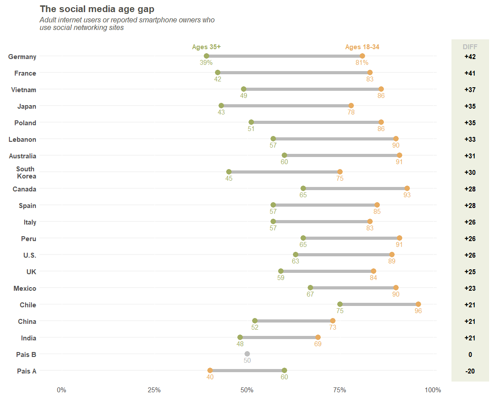

A friend of mine asked if I could replicate the following plot:

First, we load the packages and set the colors to be the same ones from the original plot (or at least, as close as possible).
# ************************************************************************* ----
# Packages ----
# ************************************************************************* ----
#install.packages("tidyverse")
library("tidyverse")
# ************************************************************************* ----
# Cores - A partir do Original ----
# ************************************************************************* ----
orange <- "#e8ab5f"
green <- "#a1ad62"
background_diff <- "#eef0e2"
gray <- "#bbbbbb"
light_gray <- "#f4f4f4"
Now, we need to recreate the data. I did that as if the data were organized as follows:
# Country Ages_35_plus Ages_18_34
# 1 Germany 0.39 0.81
# 2 France 0.42 0.83
# 3 Vietnam 0.49 0.86
# 4 Japan 0.43 0.78
# 5 Poland 0.51 0.86
# 6 Lebanon 0.57 0.90
# 7 Australia 0.60 0.91
# 8 South Korea 0.45 0.75
# 9 Canada 0.65 0.93
# 10 Spain 0.57 0.85
# 11 Italy 0.57 0.83
# 12 Peru 0.65 0.91
# 13 U.S. 0.63 0.89
# 14 UK 0.59 0.84
# 15 Mexico 0.67 0.90
# 16 Chile 0.75 0.96
# 17 China 0.52 0.73
# 18 India 0.48 0.69
# 19 Pais A 0.60 0.40
# 20 Pais B 0.50 0.50
I’ve included Pais A and Pais B so that I have one country with a negative difference, and another one
with a difference of zero.
# ************************************************************************* ----
# Data for Dotplot ----
# ************************************************************************* ----
original_df <-
data.frame(
Country = c("Germany", "France", "Vietnam", "Japan",
"Poland", "Lebanon", "Australia",
"South Korea", "Canada", "Spain", "Italy", "Peru", "U.S.",
"UK", "Mexico", "Chile", "China", "India",
"Pais A", "Pais B"
),
Ages_35_plus = c(0.39, 0.42, 0.49, 0.43,
0.51, 0.57, 0.60,
0.45, 0.65, 0.57, 0.57, 0.65, 0.63,
0.59, 0.67, 0.75, 0.52, 0.48,
0.6, 0.5
),
Ages_18_34 = c(0.81, 0.83, 0.86, 0.78, 0.86, 0.90, 0.91,
0.75, 0.93, 0.85, 0.83, 0.91, 0.89,
0.84, 0.90, 0.96, 0.73, 0.69,
0.4, 0.5
)
)
Given that, I needed to do 5 things before I started:
1) Insert a line break in South Korea
2) Calculate the age differences
3) Sort countries by their age differences
4) Set country names as factors so that we can plot it in the correct order.
5) Gather columns into key-value pairs (age groups).
## \__Line Break
original_df_v2 <-
original_df %>%
mutate(
Country = ifelse(
Country == "South Korea",
# Value_if_True:
"South \n Korea",
# Value_if_False:
as.character(Country))
)
# _________________________________________________________________________ ====
## \__Calculate the age differences
base_diff <-
original_df_v2 %>%
mutate(
Diferenca = Ages_18_34-Ages_35_plus
) %>%
Sort (descending), but that's OK as ggplot inverts the order
arrange(Diferenca, desc(Country)) %>%
# Create factors from the names of the ordered countries
mutate(
Country.fact = factor(Country, levels = unique(Country))
)
# _________________________________________________________________________ ====
## \__Gather columns
df_diff_gather_age <-
base_diff %>%
gather(
# Group Name
key = Age_Group,
# Name of the Variable to input the percentages of Age
value = Age_Percent,
# Age variables
Ages_35_plus, Ages_18_34
) %>%
# Reorder the variables in the database
select(Country, Country.fact, Age_Group, Age_Percent, Diferenca)
#___________________________________________________________________________####
# ************************************************************************* ----
# Dot Plot ----
# ************************************************************************* ----
p<-
ggplot(
data = df_diff_gather_age,
mapping = aes(
# Y Axis
y=Country.fact,
# X Axis
x=Age_Percent,
# Groups with different colors
# If difference is zero, put it into a third group
color = ifelse(Diferenca == 0, "zero", Age_Group))
) +
# Plot lines between points, by Country
geom_line(
mapping = aes(group = Country),
color = gray,
size = 2.5
) +
geom_point(
# Dot size
size=4,
# dot type. Important to be number 19, otherwise we cannot plot the dots
# with the colors for different groups
pch = 19
) +
# Add % for each point
geom_text(
# Font size
size = 4,
# Set text a little below the dots
nudge_y = -0.35,
mapping =
aes(
label =
# If country is Germany (the first one), plot numbers with %
ifelse(Country == "Germany",
# Value_if_True:
paste0(as.character(round(Age_Percent*100,0)),"%"),
# Value_if_False
paste0(as.character(round(Age_Percent*100,0)))
),
color = ifelse(Diferenca == 0, "zero", Age_Group)
)
) +
# Add "Legend" above Germany (the first one)
geom_text(
# Font size
size = 4,
# Bold face
fontface = "bold",
# Set text a little above the dots
nudge_y = 0.6,
mapping =
aes(
label =
# If Country is Germany, plot legend
ifelse(Country == "Germany",
# Value_if_True:
ifelse(Age_Group == "Ages_35_plus",
# Value_if_True:
"Ages 35+",
# Value_if_False:
"Ages 18-34"
),
# Value_if_False
""
),
color = ifelse(Diferenca == 0, "zero", Age_Group)
)
) +
# Change dot colors
scale_color_manual(
values = c(orange, green, "gray")
) +
# Change scale x axis
scale_x_continuous(
# Set limits to 0 and 1.2 (we won't set it to 1 because we neeed some space
# after 1 to place the values of the differences)
limits = c(0,1.2),
# Show tick marks at every 25%
breaks = seq(0,1,.25),
# Change scale to percent
labels = scales::percent
) +
# Expand y axis scale so that the legend can fit
scale_y_discrete(
expand = expand_scale(add=c(0.65,1))
) +
# Add white rectangle to set the area where the values of the differences will
# be
geom_rect(
mapping = aes(xmin = 1.01, xmax = Inf , ymin = -Inf, ymax = Inf),
fill = "white",
color = "white"
) +
# Add rectangle with correct banground color for the differences
geom_rect(
mapping = aes(xmin = 1.05, xmax = 1.15 , ymin = -Inf, ymax = Inf),
fill = background_diff,
color = background_diff
) +
# Add Differences values
geom_text(
# Bold face
fontface = "bold",
# Font size
size = 4,
# Font Color
colour = "black",
# Position
mapping =
aes(
x = 1.1,
y = Country,
label =
# To avoid duplicate values, plot empty text for the first group and
# plot the difference only for the Ages_18_34 group.
ifelse(Age_Group == "Ages_35_plus",
# Value_if_True
"",
#Value_if_False
# If the difference is equal to zero, do not put any signal.
# Otherwise, if Positive, put the + sign on the front.
ifelse(Diferenca == 0,
# Value_if_True:
paste0(as.character(round(Diferenca*100,0))),
# Value_if_False
ifelse(Diferenca > 0,
# Value_if_True
paste0("+",as.character(round(Diferenca*100,0))),
# Value_if_False
paste0(as.character(round(Diferenca*100,0)))
)
)
)
)
) +
# Insert Title of Differences
geom_text(
# Bold face
fontface = "bold",
# Font size
size = 4,
# Cor
colour = "gray",
# Set text a little above the dots
nudge_y = 0.6,
# Position
mapping =
aes(
x = 1.1,
y = Country,
label =
# If Country is Germany, plot values
ifelse(Country == "Germany",
# Value_if_True
"DIFF",
#Value_if_False
""
)
)
) +
# Plot Title and Axis Labels
labs(
title = "The social media age gap",
subtitle = paste0(
"Adult internet users or reported smartphone owners who \n",
"use social networking sites"
),
x = "",
y = ""
) +
# Change background, General font size, and other things
theme(
# Change font color and text for all text outside geom_text
text = element_text(color = "#4e4d47", size = 14),
# Country names in bold face
axis.text.y = element_text(face = "bold"),
# Add space between x axis text and plot
axis.text.x = element_text(vjust = -0.75),
# Do not show tick marks
axis.ticks = element_blank(),
# Delete original legend (keep only the one we created)
legend.position = "none",
# White background
panel.background = element_blank(),
# Country (y Axis) Lines
panel.grid.major.y = element_line(colour = light_gray, size = 1),
# Change Title Font
plot.title = element_text(face = "bold", size = 16),
# Change Subtitle Font and add some margin
plot.subtitle = element_text(face = "italic", size = 12,
margin = margin(b = 0.5, unit = "cm"))
)
p
And the final plot: 